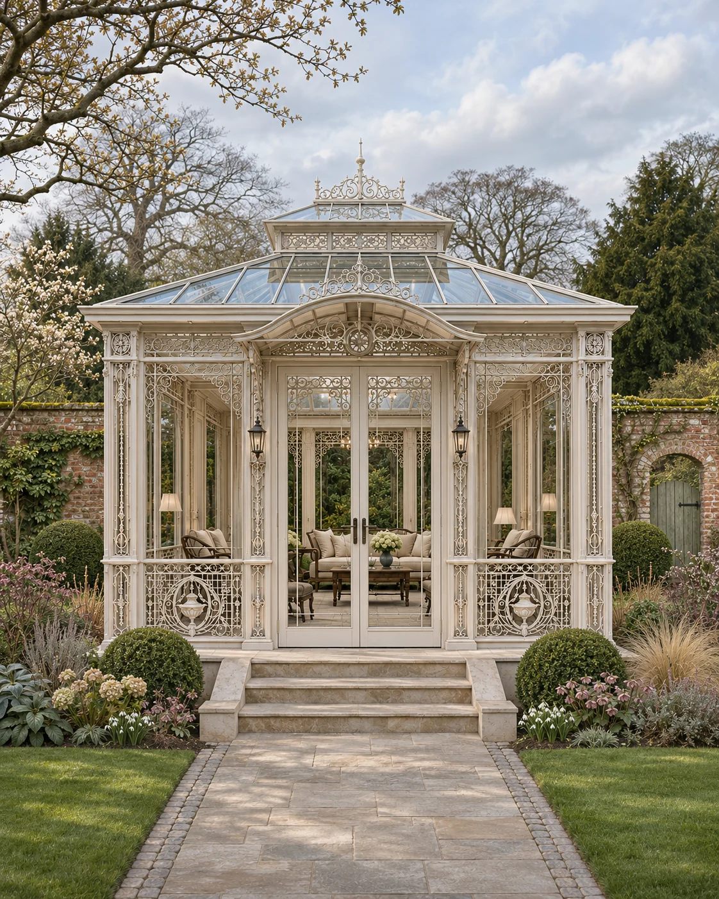
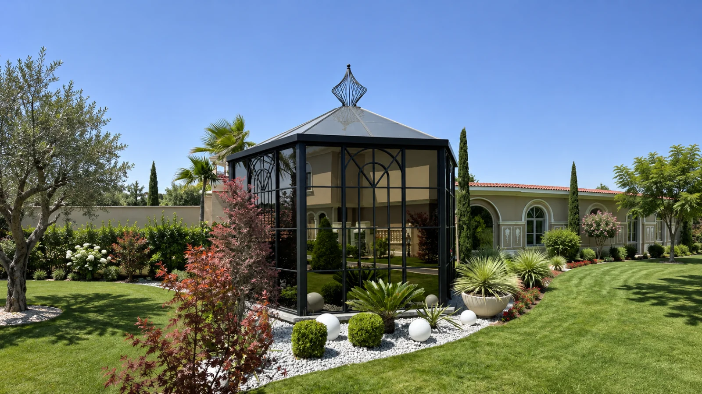

Position and approach
Consider the path from the house, access around the structure and how it is seen from the principal rooms and garden.

A place within the garden
Design visualisation
Marla Garden · London
A room within the garden, with a setting of its own. Explore freestanding glazed pavilions, from classical arched frames to lantern-roof glasshouses and quieter architectural forms.
Unlike a room attached to the house, a freestanding garden pavilion is seen from every side. Its roofline, entrances and decorative details should work with the paths, planting and views around it. Consider access, ground conditions and any services early in the design brief.
Consider the path from the house, access around the structure and how it is seen from the principal rooms and garden.
A sitting space, an entertaining area and a botanical glasshouse have different requirements. Establish the intended use before choosing a construction.
Consider the view from within, the position of the doors and the way the glazing pattern defines the room. Ventilation, shading and intended use should be discussed alongside the architectural form.
Foundations, drainage, services, ventilation and any permissions need to be considered for the particular site.
Explore the collection
Compare roof forms, glazing patterns and the relationship to the garden. Open a design to explore its details and reference views.
 Garden Glasshouses
Garden GlasshousesDesign collection
A raised lantern gives the glazed roof a second architectural level. Green framing and a central entrance establish the building as a destination within the garden.
Explore the design Garden Glasshouses
Garden GlasshousesDesign collection
A pale glasshouse with a raised roof lantern and broad glazed elevations. The light frame and repetitive window pattern give the structure an open architectural character.
Explore the design Garden Glasshouses
Garden GlasshousesDesign collection
A domed glazed structure is presented through multiple exterior and interior views. Curved roof ribs and tall framing shape a garden destination around light, planting and gathering.
Explore the design Classical Garden Pavilions
Classical Garden PavilionsDesign collection
A circular footprint gives these garden pavilions a balanced silhouette, with decorative framing and a shaped roof.
Explore the design Garden Glasshouses
Garden GlasshousesDesign collection
A green glazed garden structure is shown in a planted courtyard setting, with warm light visible inside. The frame and roof establish a clear architectural outline among the trees.
Explore the design
Classical Garden PavilionsDesign collection
A pale garden salon has a pronounced entrance and a glazed roof, with warm interior light and a paved approach. Decorative framing gives the small structure an architectural presence.
Explore the designLook closer

ClassicA compact dark-framed garden pavilion with tall glazing, curved decorative bars and a pyramidal roof topped by an open metal finial.
Explore project Classic
ClassicA dark glazed pavilion with rounded bays, a raised curved roof lantern and ornamental double doors, photographed in snow.
Explore project Classic
ClassicA black garden salon with gold ornamental metalwork, decorative railings and a curved interior ceiling.
Explore projectDevelop your project
Compare garden structure designs and bring your preferred references to the design discussion.
Compare an open-sided gazebo before deciding on the level of enclosure.
Our design process begins with the setting, intended use and practical requirements.
Share the setting and your preferred direction to discuss your garden project.
Planning your space
Not necessarily. A structure for people to occupy and one intended mainly for growing plants may need different specifications. The intended use should be clear from the outset.
A garden plan or photographs, approximate dimensions, the intended use and a London postcode provide a useful starting point.
Your next space
Share the setting, the way you want to use the space and the designs you are drawn to.
Plan your project